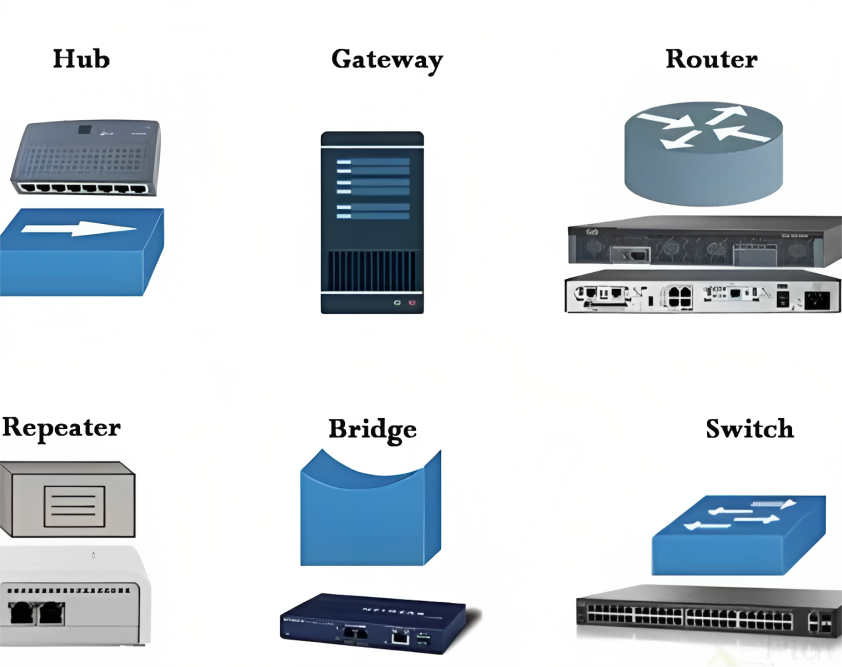

Una red informática es un sistema de interconexión que permite la comunicación y el intercambio de información entre dispositivos.
Las redes informáticas son sistemas de interconexión que permiten la comunicación y el intercambio de información entre diferentes dispositivos, como computadoras, servidores, dispositivos móviles y otros dispositivos conectados. Estas redes facilitan la transferencia de datos, la colaboración entre usuarios y el acceso a recursos compartidos. A través de las redes informáticas, los dispositivos pueden comunicarse entre sí, compartir información y acceder a servicios en línea. Esto permite la comunicación instantánea, el intercambio de datos y el acceso a recursos de manera eficiente, independientemente de la ubicación geográfica de los dispositivos. En resumen, las redes informáticas son sistemas que conectan dispositivos para facilitar la comunicación y el intercambio de información.
Las redes informáticas son de vital importancia en el mundo actual, ya que juegan un papel fundamental en la comunicación, la colaboración y el intercambio de información a nivel global. Estas redes permiten la conexión instantánea entre personas y organizaciones, sin importar su ubicación geográfica, lo que facilita la comunicación eficiente y la transferencia rápida de datos. Además, las redes informáticas proporcionan acceso a recursos compartidos, como archivos, impresoras y servicios en línea, lo que promueve la colaboración y la eficiencia en entornos empresariales, educativos y sociales. Asimismo, la conectividad global que brindan las redes informáticas a través de Internet ha transformado la forma en que interactuamos, trabajamos, aprendemos y nos entretenemos. En resumen, las redes informáticas son esenciales en nuestra vida diaria, ya que nos mantienen conectados, nos permiten acceder a recursos y servicios, y nos brindan la capacidad de comunicarnos y colaborar en un mundo cada vez más digitalizado.
Existen varios tipos de redes informáticas, cada una adaptada a necesidades específicas:
Los dispositivos de conexión en redes son componentes clave que permiten la interconexión y comunicación eficiente entre los dispositivos en una red. Estos dispositivos facilitan el flujo de datos y recursos compartidos. Algunos ejemplos comunes de dispositivos de conexión en redes son los siguientes
Estos dispositivos de conexión son esenciales para establecer y mantener una comunicación efectiva y un intercambio de datos eficiente en una red. Cada uno cumple un papel específico en el enrutamiento, la distribución y la transmisión de datos, lo que permite una conectividad fluida y un acceso a recursos compartidos en la red.
created with
HTML Designer .